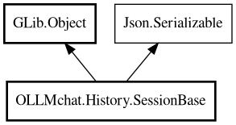

SessionBase
Object Hierarchy:

Description:
public abstract class SessionBase : Object, Serializable
Base class for Session implementations.
Contains shared functionality that doesn't depend on chat existing. Subclasses must implement abstract methods for chat-dependent
operations. Provides common properties like id, title, and client management.
Content:
Properties:
Creation methods:
Methods:
- public void activate ()
Activates this session, connecting client signals to relay to UI.
Called when the session becomes the active session in the UI.
- public void add_message (Message message)
Adds a message to the session and relays it to the UI via Manager
signal.
- public abstract void cancel_current_request ()
Cancels the current request if one is active. Must be implemented by
subclasses.
- public void deactivate ()
Deactivates this session, disconnecting client signals. Called when
the session is no longer the active session in the UI.
- public abstract bool deserialize_property (string property_name, out Value value, ParamSpec pspec, Node property_node)
Handle JSON property mapping and custom deserialization. Must be
implemented by subclasses.
- public abstract async SessionBase? load () throws Error
Loads the session data if needed (e.g., for SessionPlaceholder). No-op
for sessions that are already loaded.
- protected abstract void on_message_created (Message m, ChatContentInterface? content_interface)
Handler for message_created signal from this session's client. Handles
message persistence and relays to Manager. Must be implemented by subclasses.
- protected abstract void on_stream_chunk (string new_text, bool is_thinking, Chat response)
Handler for stream_chunk signal from this session's client. Handles
unread tracking and session saving. Must be implemented by subclasses.
- public abstract async void read () throws Error
Read session from JSON file. Must be implemented by subclasses.
- public abstract void saveToDB ()
Save session to SQLite database. Must be implemented by subclasses.
- public abstract async void save_async (bool update_timestamp = true)
Save session to both DB and file asynchronously. Must be implemented
by subclasses.
- public abstract async Chat send_message (string text, Cancellable? cancellable = null) throws Error
Sends a message using this session's client. Must be implemented by
subclasses.
- public abstract Node serialize_property (string property_name, Value value, ParamSpec pspec)
Handle JSON property mapping for serialization. Must be implemented by
subclasses.
- public string to_path ()
Convert file ID to path format. Converts ID format "Y-m-d-H-i-s" to
path format "YYYY/mm/dd/h-i-s"
- public abstract async void write () throws Error
Write session to JSON file. Must be implemented by subclasses.
Fields:
Inherited Members:
All known members inherited from class GLib.Object
- @get
- @new
- @ref
- @set
- add_toggle_ref
- add_weak_pointer
- bind_property
- connect
- constructed
- disconnect
- dispose
- dup_data
- dup_qdata
- force_floating
- freeze_notify
- get_class
- get_data
- get_property
- get_qdata
- get_type
- getv
- interface_find_property
- interface_install_property
- interface_list_properties
- is_floating
- new_valist
- new_with_properties
- newv
- notify
- notify_property
- ref_count
- ref_sink
- remove_toggle_ref
- remove_weak_pointer
- replace_data
- replace_qdata
- set_data
- set_data_full
- set_property
- set_qdata
- set_qdata_full
- set_valist
- setv
- steal_data
- steal_qdata
- thaw_notify
- unref
- watch_closure
- weak_ref
- weak_unref
All known members inherited from interface Json.Serializable
- default_deserialize_property
- default_serialize_property
- deserialize_property
- find_property
- get_property
- list_properties
- serialize_property
- set_property